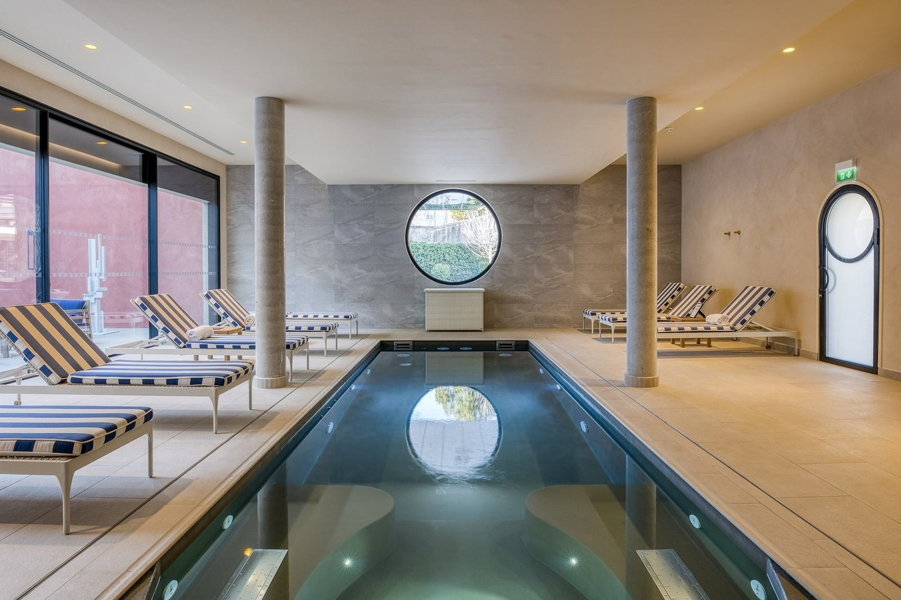
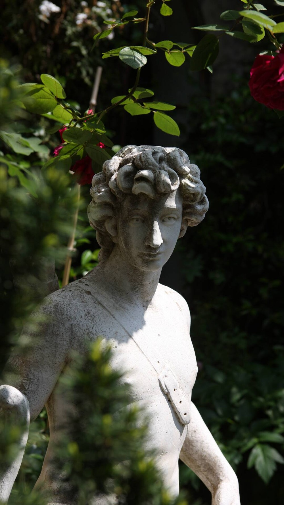
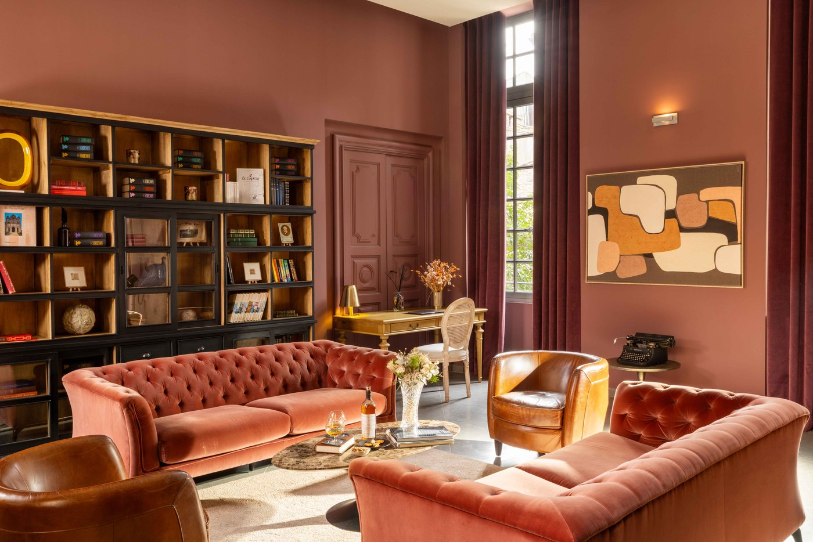

Meilleurs hôtels à Nîmes : 8 adresses de charme classées en 2026
Trois étoiles Michelin dans deux hôtels, un hôtel particulier du XVe classé et un
cloître du XVIIIe à cinq minutes des Arènes. Nîmes a une offre courte, mais
elle est bonne.
Par Lucas Lecoq, rédacteur en chef✺Publié le 25 août 2026✺14 min de lecture
Le jardin de L'Imperator, quai de la Fontaine. Une respiration rare en centre
ancien. Photo : site officiel de l'établissement.
L'essentielTrois adresses, trois budgets
Maison Albar Hotels L'Imperator, 9,4/10 : le 5 étoiles de la ville,
deux étoiles au Guide MICHELIN pour le Duende signé Pierre Gagnaire, spa Codage de
350 m² et un jardin en plein centre.
Jardins Secrets, 9,1/10 : quatorze chambres seulement, un cloître
planté et un spa à bassin de marbre. L'adresse confidentielle de Nîmes.
Margaret, Hôtel Chouleur, 8,7/10 : le meilleur rapport charme-prix
de la ville, à partir de 115 €. Hôtel particulier du XVe classé, une étoile
MICHELIN au Rouge, piscine et spa en centre ancien.
Nîmes n'a pas la profondeur hôtelière d'Aix ou d'Avignon, et il serait malhonnête de
prétendre le contraire : la ville compte peu d'adresses de caractère, et deux d'entre elles
concentrent l'essentiel de l'intérêt. En revanche, ce qu'elle a est sérieux. Trois
étoiles au Guide MICHELIN se partagent entre deux hôtels, ce que peu de villes de
150 000 habitants peuvent afficher. Nous avons classé huit établissements par le
Score LMHS sur 10 et l'Indice Nîmes sur 5, notre indice
thématique pour cette page.
Notre sélection : les 8 meilleurs hôtels de Nîmes en 2026
01

Maison Albar Hotels L'Imperator, le grand hôtel de la ville 9,4/10
Quai de la Fontaine, 15 rue Gaston Boissier, 30900 Nîmes · 5 étoiles · Indice Nîmes 4,9/5
À partir de 350 €/nuit selon les tarifs affichés par la maison.
Ouvert en 1929, rendu à la ville en 2019 après une rénovation confiée à l'architecte franco-argentin Marcelo Joulia. La maison a hébergé Hemingway, Cocteau, Picasso et Dalí, et le bar porte encore le nom du premier. 53 chambres et 8 maisons individuelles, décor contemporain à contrastes : cuir aux têtes de lit, velours, parquet, marbre dans les salles de bains. Le jardin central, planté d'un ginkgo remarquable, est la vraie signature du lieu, et une rareté en centre ancien. Le Duende est distingué de deux étoiles au Guide MICHELIN et signé Pierre Gagnaire ; la brasserie L'Impé traite le terroir provençal et camarguais. Le spa Codage de 350 m² aligne quatre cabines, piscine intérieure et extérieure, jacuzzi et hammam. Le bémol : les tarifs les plus élevés de la ville, et un écart perceptible entre les catégories d'entrée et le prix affiché. Pour qui cherche une grande maison et une table de haut niveau sans quitter le centre.
53 chambres et 8 maisons · Duende 2 étoiles MICHELIN · Spa Codage 350 m² · Deux piscines ·
Site officiel →
02

Jardins Secrets, le cloître caché du Vieux Nîmes 9,1/10
À partir de 325 €/nuit, la maison ne publiant pas de grille détaillée.
Un ancien relais du XVIIIe siècle, transformé en boutique-hôtel 5 étoiles, à cinq minutes à pied des Arènes et pourtant introuvable si l'on ne cherche pas. Le jardin à l'italienne, planté de bougainvilliers, de palmiers, d'orangers et d'un olivier ancien, fabrique une bulle méditerranéenne en plein centre historique. Quatorze chambres et suites, et c'est peu : papiers peints, cheminées de marbre, miroirs dorés, lits à baldaquin, salles de bains traitées en boudoirs. Le spa, La Source des Secrets, tient dans un bassin de marbre ceint de colonnes, avec hammam et table de massage, et se privatise. Piscine extérieure au jardin. Le bémol, et il est réel : pas de restaurant sur place, et quatorze clés qui imposent de réserver très en amont. Pour les couples et pour qui préfère une maison à un hôtel.
14 chambres · Spa privatisable à bassin de marbre · Piscine · Sans restaurant ·
Site officiel →
03

Margaret, Hôtel Chouleur, le meilleur rapport charme-prix 8,7/10
À partir de 115 €/nuit, le tarif d'entrée le plus bas de ce trio de tête.
Hôtel particulier du XVe siècle classé aux Monuments historiques, rénové en 2020. Dix chambres et suites seulement, dans un registre assumé de mélange : murs ébène, moutarde ou prune, vieilles pierres, plancher, mobilier chiné du rotin au marbre. Le restaurant Rouge est distingué d'une étoile au Guide MICHELIN et de trois toques au Gault&Millau. Précision utile, parce que beaucoup d'articles ne l'ont pas encore intégrée : Georgiana Viou, qui avait décroché cette étoile en 2023, a quitté la maison en juin 2025 ; les cuisines sont depuis dirigées par Luka-Tao Debenath, son second pendant deux ans, et l'étoile a été conservée. Un bistrot, Gigi, complète l'offre. La maison dispose aussi d'un spa, de massages, d'une bibliothèque et surtout d'une piscine extérieure en plein centre ancien, ce qui est rare à Nîmes. Le bémol : dix clés, donc des disponibilités tendues en saison. Pour qui veut le charme et une étoile sans dépenser 350 €.
Une demeure du début du XXe siècle, à l'écart de l'agitation, entre la gare et le centre. La façade porte encore ses ornements, oriel et perron ; à l'intérieur, vitraux, lambris et mosaïques ont été conservés. Cinq chambres et deux suites, chacune avec sa terrasse sur le jardin, où se trouve une piscine extérieure. L'atmosphère est celle d'une maison privée plutôt que d'un hôtel, ce qui est à la fois l'argument et la limite. Le bémol : format maison d'hôtes, donc pas de service hôtelier continu, pas de restaurant, et un emplacement un peu en retrait des Arènes. Pour les couples qui cherchent le silence et l'architecture.
5 chambres et 2 suites · Jardin et piscine · Demeure Belle Époque ·
Site officiel →
05
Bien Loin d'Ici, trois écolodges avec spa privatif 8,1/10
386 Traverse d'Engance, 30000 Nîmes · Maison d'hôtes et spa · Indice Nîmes 4,0/5
À partir de 260 €/nuit.
Une proposition qui n'a rien à voir avec les précédentes. Trois écolodges de 30 m² en ossature bois bioclimatique, posés dans la garrigue à quelques minutes du centre. Chacun dispose de sa terrasse privée avec spa, sauna et hammam privatifs, face à un jardin méditerranéen sec pensé pour limiter l'arrosage. Couloir de nage à débordement, vélos à disposition, thés et boissons inclus. L'intimité est totale, et c'est bien le sujet. Le bémol : à l'écart du centre, la voiture est nécessaire ; et avec trois lodges seulement, la disponibilité relève de la chance. Pour les couples en quête de retrait, et pour les voyageurs attentifs à l'empreinte du séjour.
3 écolodges de 30 m² · Spa, sauna et hammam privatifs · Couloir de nage ·
Site officiel →
06
Best Western Le Marquis de la Baume, l'hôtel particulier accessible 7,8/10
Contrairement à ce qu'on lit parfois, cette adresse n'est pas excentrée : elle occupe un hôtel particulier du XVIIe siècle en plein centre historique, organisé autour d'un patio où le petit-déjeuner est servi à la belle saison. Trente-quatre chambres et suites réparties en quatre catégories, spacieuses, tenues, avec un escalier d'époque qui vaut le coup d'œil. C'est le meilleur compromis de la ville entre le cachet et le budget. Le bémol : l'appartenance à une chaîne se sent dans le service et la standardisation des chambres, et il n'y a ni spa ni restaurant. Pour les séjours courts, les déplacements professionnels et les budgets tenus.
34 chambres · Hôtel particulier du XVIIe · Patio · Centre historique ·
Site officiel →
07
Hôtel & Spa Vatel, le spa sans la note du centre 7,5/10
Une adresse à part, puisqu'elle est adossée à l'école hôtelière Vatel : le service est assuré pour partie par des élèves encadrés, ce qui explique à la fois l'attention et quelques hésitations. Quarante-six chambres contemporaines, deux restaurants, un parking, et surtout un espace bien-être complet avec piscine intérieure chauffée, jacuzzi, hammam et salle de sport, en accès libre pour les résidents. C'est le meilleur ratio spa-prix de Nîmes. Le bémol, et il est net : 3,8 km du centre historique, donc voiture ou taxi, et une atmosphère plus proche de l'hôtel de séminaire que de la maison de charme. Pour un séjour bien-être à budget maîtrisé, et pour les familles.
46 chambres · Piscine intérieure chauffée, jacuzzi, hammam · Deux restaurants · École Vatel ·
Site officiel →
08
Square Hôtel, la bonne adresse à petit prix 7,2/10
7 square de la Couronne, 30000 Nîmes · 3 étoiles · Indice Nîmes 3,4/5
45 à 120 €/nuit selon la chambre et la saison.
Un 3 étoiles sans prétention, à cinq cents mètres des Arènes et à deux pas de l'hôtel de ville. Trente-quatre chambres, certaines avec balcon ou vue sur la ville, un salon commun et une terrasse. C'est propre, central, et le rapport emplacement-prix est le meilleur du classement. Le bémol : les prestations s'arrêtent là, ni spa, ni restaurant, ni service d'hôtel de charme, et l'ensemble est fonctionnel plutôt que séduisant. Pour les séjours courts, les visites du week-end et les budgets serrés.
Classement par Score LMHS. Tarifs, capacités et prestations relevés le 25 août
2026 sur les sites officiels des établissements et auprès du Guide MICHELIN.
Protocole LMHS : comment nous avons classé ces hôtels
L'Indice Nîmes, noté sur 5, est un indice thématique propre à cette page. Il
synthétise cinq dimensions : ancrage patrimonial (rapport du bâti à l'histoire
de la ville), proximité du centre ancien, sensorialité
méditerranéenne (lumière, matières, jardins), table et
bien-être. Le Score LMHS sur 10 évalue la globalité :
emplacement, confort, originalité, rapport qualité-prix et réserves incluses. Il relève de la
grille LMHS Destination, celle de nos classements par
ville.
Ce palmarès est documentaire. Tarifs, capacités, prestations et distinctions
ont été relevés le 25 août 2026 sur les sites officiels des établissements et auprès du Guide
MICHELIN. Aucun partenariat commercial, aucune affiliation.
Nîmes : ce qu'il faut savoir avant de réserver
Les Arènes, la Maison Carrée et les Jardins de la Fontaine tiennent dans un carré qui se
parcourt à pied en une matinée, et le Musée de la Romanité fait face à l'amphithéâtre. Loger
dans l'écusson, le centre ancien, évite la voiture, ce qui compte dans une ville où le
stationnement est difficile. Cinq des huit adresses de ce palmarès y sont.
Saisonnalité. Avril, mai, septembre et octobre offrent le meilleur
compromis entre climat et tarifs. Juillet et août sont chauds, la ville dépassant régulièrement
les 35 °C. Les deux férias, celle de Pentecôte et celle des Vendanges en septembre,
sont à connaître avant de réserver : les tarifs y montent fortement et les
disponibilités disparaissent des mois à l'avance. C'est la seule vraie contrainte du calendrier
nîmois.
Selon nos relevés 2026, le Maison Albar Hotels L'Imperator obtient la
meilleure note, 9,4/10 : c'est le seul 5 étoiles de la ville à réunir une
table distinguée de deux étoiles au Guide MICHELIN, un spa de 350 m², deux
piscines et un jardin en centre ancien. Pour une maison plus petite et plus intime, les
Jardins Secrets (9,1/10) et leurs quatorze chambres restent l'adresse
confidentielle de référence.
Quel hôtel de Nîmes offre le meilleur rapport qualité-prix ?
Margaret, Hôtel Chouleur, sans hésitation. À partir de
115 €, on obtient un hôtel particulier du XVe siècle classé aux
Monuments historiques, une table étoilée au Guide MICHELIN, un spa et une
piscine extérieure en plein centre ancien. Aucune autre adresse de ce palmarès ne réunit
autant à ce tarif. Pour un budget plus serré, le Best Western Le Marquis de la
Baume (90 à 114 €) occupe un hôtel particulier du XVIIe siècle, lui
aussi en centre historique.
Y a-t-il des restaurants étoilés dans les hôtels de Nîmes ?
Oui, et trois étoiles se partagent entre deux hôtels. Le
Duende, au Maison Albar Hotels L'Imperator, est signé
Pierre Gagnaire et distingué de deux étoiles. Le
Rouge, au Margaret, en détient une, ainsi que trois toques
au Gault&Millau. Précision qui a son importance :
Georgiana Viou, qui avait obtenu cette étoile en 2023, a quitté le Rouge en juin
2025 ; la cuisine est depuis dirigée par Luka-Tao Debenath, son
second pendant deux ans, et l'étoile a été conservée.
Quels hôtels de Nîmes sont proches des Arènes ?
Cinq des huit adresses sont dans le centre ancien. Les Jardins Secrets
sont à cinq minutes à pied, le Margaret rue Fresque et le Square
Hôtel à cinq cents mètres. Le Best Western Le Marquis de la Baume,
rue Nationale, est également dans l'écusson. L'Imperator borde les Jardins
de la Fontaine, à une dizaine de minutes de marche. En revanche, le Vatel
est à 3,8 km et Bien Loin d'Ici dans la garrigue : pour ces deux-là, la
voiture est nécessaire.
Quels hôtels de Nîmes ont un spa ?
Quatre. Le spa Codage de L'Imperator est le plus complet, 350 m², quatre
cabines, piscine intérieure et extérieure, jacuzzi et hammam. Les Jardins
Secrets proposent un spa privatisable, avec bassin de marbre entouré de colonnes et
hammam. Le Margaret dispose d'un spa et de massages, ce que beaucoup de
classements omettent. Le Vatel offre le meilleur ratio spa-prix, avec
piscine intérieure chauffée, jacuzzi et hammam de 99 à 155 € la nuit. À part, Bien
Loin d'Ici donne à chacun de ses trois lodges un spa, un sauna et un hammam
privatifs.
Quelle est la meilleure période pour réserver à Nîmes ?
Avril, mai, septembre et octobre, pour le climat comme pour les tarifs.
Juillet et août sont chauds, la ville dépassant souvent les 35 °C. Le point à vérifier avant
toute réservation reste les deux férias, celle de Pentecôte et celle des
Vendanges en septembre : sur ces périodes, les tarifs montent fortement et les
disponibilités partent des mois à l'avance.
Le mot de LucasUne offre courte, mais qui ne triche pas
Nîmes est traitée comme une étape entre Avignon et la mer, et son hôtellerie a longtemps ressemblé à ce statut. Ce n'est plus vrai. Une ville de cette taille qui aligne trois étoiles Michelin dans deux hôtels, un hôtel particulier du XVe classé et un cloître du XVIIIe à cinq minutes des Arènes n'a plus à s'excuser. Ce qui lui manque encore, c'est le milieu de gamme : entre le Margaret à 115 € et L'Imperator à 350 €, il n'y a presque rien de comparable en charme. Le Margaret est d'ailleurs l'anomalie de ce classement, un 5 étoiles étoilé au prix d'un 4 étoiles, et je serais surpris qu'il reste longtemps à ce tarif.
Lucas Lecoq, rédacteur en chef
Méthode et sources
8 hôtels nîmois classés par le Score LMHS sur 10, issu de la grille LMHS
Destination employée dans nos classements par ville, et par l'Indice Nîmes sur
5, indice thématique propre à cette page : ancrage patrimonial, proximité du centre
ancien, sensorialité méditerranéenne, table et bien-être. Aucun séjour de contrôle
n'a été effectué pour cette édition. Tarifs, capacités, prestations et distinctions
relevés le 25 août 2026 sur les sites officiels des établissements et auprès du Guide
MICHELIN. Le changement de chef au restaurant Rouge a été recoupé auprès de la presse
professionnelle. Aucun partenariat commercial, aucune affiliation. Photographies : sites
officiels des établissements.
8 adressesIndice Nîmes /5Sans séjour de contrôle0 partenariat